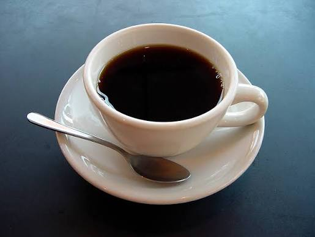

O Café
Acreditamos que o café sempre é bem-vindo, por isso nosso restaurante oferece sempre a possibilidade de aquisição em sua cantina, que permanece aberta durante todo o dia.
O RETORNO AO CAOS ATRAVÉS DOS SABORES E DA NATUREZA DE SÃO CARLOS
Alta Gastronomia
No Resort Throjanico temos o Restaurante Universitário, um espaço de arquitetura rústica que abraça os estudantes, desde que atravessem a chuva ocasional. Nossa cozinha celebra a "Alta Gastronomia Universitária", com todos os nutrientes necessários aos hospedes. Aqui, onde o tempo é curto, alimentamos todos no menor período possível.

Acreditamos que o café sempre é bem-vindo, por isso nosso restaurante oferece sempre a possibilidade de aquisição em sua cantina, que permanece aberta durante todo o dia.

Não trabalhamos com um menu fixo, mas sim com o que o contrato permite.
Detox Digital Autêntico
Para que o detox digital seja autêntico, trocamos o Wi-Fi por conexões reais. Nossas vivências foram desenhadas para que os hóspedes usem as mãos, os sentidos e a presença absoluta, honrando a história, o solo e o céu de São Carlos.

A Experiência: Honrando a tradição de São Carlos como um dos maiores polos de astronomia do Brasil, transformamos nosso gramado principal em um observatório a céu aberto. Em noites de céu limpo, grandes pufes e mantas são espalhados pelo jardim. Um astrônomo parceiro do hotel guia os hóspedes através de telescópios de alta potência, desvendando crateras lunares, os anéis de Saturno e aglomerados estelares.
O Toque Especial: Acompanha taças de vinho encorpado ou chocolate quente cremoso, servidos à luz de lamparinas.
A Experiência: A terra avermelhada e rica em ferro do interior paulista não é apenas para plantio; ela é arte. Nesta oficina conduzida por um ceramista local, os hóspedes são convidados a sujar as mãos e desligar a mente. O barro funciona como uma terapia tátil. Você aprenderá técnicas manuais (acordelado e belisco) para moldar sua própria xícara, cumbuca ou vaso.
O Toque Especial: As peças criadas pelos hóspedes são secas e queimadas em alta temperatura no forno do hotel ao longo dos dias seguintes e, posteriormente, enviadas por correio para a casa do hóspede, como uma memória física do Resort.


A Experiência: Um mergulho na história que construiu a região. O hóspede acompanha nosso mestre de torra até o antigo terreiro de secagem da fazenda. A vivência ensina a identificar os grãos, participar da torra manual em uma panela de ferro sobre o fogo a lenha (sentindo a transformação dos aromas) e, finalmente, moer o café no moedor manual de manivela.
O Toque Especial: A vivência termina com uma roda de conversa ao redor do fogo, degustando o café recém-torrado acompanhado de um bolo de fubá cremoso saindo do forno.
A Experiência: Uma adaptação da prática japonesa de imersão terapêutica na natureza, guiada por um biólogo especialista na flora local. É uma caminhada de baixíssimo impacto e ritmo extremamente lento pelas trilhas ecológicas da propriedade (área de transição entre Cerrado e Mata Atlântica). É expressamente proibido portar celulares ou relógios. O foco é a descompressão profunda.
O Toque Especial: O guia ensina a identificar texturas de troncos, aromas de folhas amassadas, o som dos pássaros nativos (como o tucano e a seriema) e os usos medicinais de plantas como o barbatimão. A caminhada termina em um redário escondido na mata, onde é servido um chá gelado de capim-limão.